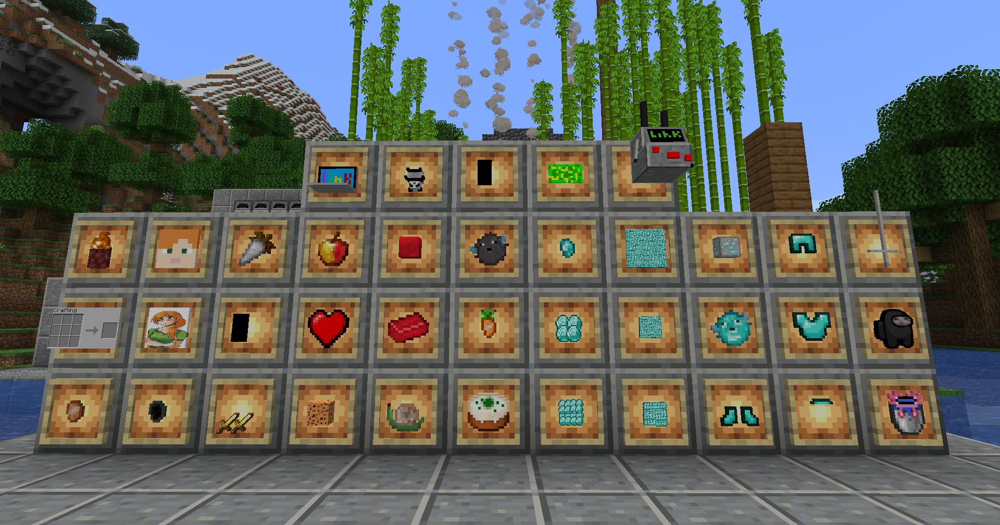

A few features...
(Take a close look)



This Mod adds a lot of cursed and useless features to the game!
A bunch of cursed items and blocks, which were made purely for fun!
(Take a close look)
Tastes like sunshine!
-> Yes, the Fabric API is required!
-> No, the mod is discontinued!
I do not plan on fixing any bugs related to this mod!
-> No, there won't be any updates!
-> For fun and learning purposes!